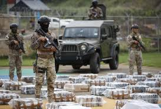

¿Qué es el narcotráfico? El narcotráfico es la producción, transporte y venta ilegal de drogas. En México, este problema ha crecido desde hace décadas, afectando la seguridad, la economía y la política del país. ⸻ Historia del narcotráfico en México • Décadas de 1970–1980: México comenzó como ruta de paso para drogas que venían de Sudamérica hacia Estados Unidos. • Años 90 y 2000: Los cárteles mexicanos crecieron en poder. Algunos de los más conocidos son: • Cártel de Sinaloa • Los Zetas • Cártel del Golfo • Cártel de Jalisco Nueva Generación (CJNG) • 2006: El gobierno de Felipe Calderón declaró la “guerra contra el narcotráfico”, usando al ejército para combatir a los cárteles. Esto aumentó la violencia.
